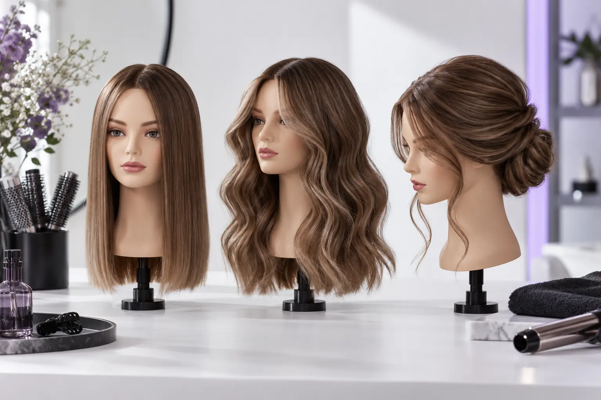

Plaukų formavimo gidas: džiovinimas, sušukavimas ir proginė šukuosena
Autorius: Madbeauty redakcija · Numatyta 2026 m. spalio 15 d. 10:00 (Lietuvos laiku)
Sužinokite, kuo skiriasi džiovinimas, kasdienis sušukavimas ir proginė šukuosena, kokią darbų apimtį aptarti ir ką nurodyti prieš vizitą.

Plaukų formavimas padeda sukurti norimą išvaizdą, o kirpimas keičia plaukų ilgį ar kirpimo formą. Renkantis paslaugą pirmiausia verta įvardyti tikslą: išdžiovinti ir tvarkingai sušukuoti, suformuoti garbanas ar bangas, ar paruošti plaukus progai. Šie tikslai gali persidengti, o paslaugų pavadinimai ir įtraukti darbai skirtingų teikėjų meniu gali skirtis.
Trys formavimo tikslai
- Džiovinimas ir paprastas sušukavimas – kai reikia išdžiovinti plaukus ir suteikti jiems tvarkingą užbaigimą. Iš anksto pasitikrinkite, ar į kainą įeina plovimas, džiovinimas šepečiu ir formavimo priemonės.
- Kasdienis norimos formos sukūrimas – kai pageidaujate, pavyzdžiui, bangų, garbanų, glotnesnio vaizdo ar daugiau apimties. Tiksliai įvardykite, kas jums svarbiausia: sruogų kryptis, apimtis ar bendras siluetas. Jei dvejojate tarp sušukavimo variantų, skaitykite „Garbanos, bangos ir tiesus sušukavimas: ką parodyti šukuosenos užduotyje?“
- Proginė šukuosena – kai formą reikia pritaikyti konkrečiai progai, aprangai ar aksesuarams. Tai gali būti susegta arba palaida šukuosena, tačiau žodis „proginė“ pats savaime nepasako, kiek darbo, priemonių ar laiko reikės. Daugiau apie pasirinkimą aprašo „Susegta ar palaida proginė šukuosena: tvirtinimas, apranga ir aksesuarai“.
Jei dar neaišku, ar užteks paprasto sušukavimo, ar reikia sudėtingesnio paruošimo, palyginkite „Džiovinimas ir sušukavimas ar proginė šukuosena: skirtinga darbo apimtis“. Tai padeda aptarti darbų apimtį, bet nenustato, kaip kiekvienas teikėjas vadina savo paslaugas.
Kas gali būti įtraukta į paslaugą?
Vieno universalaus paslaugos paketo nėra. Aprašyme gali būti nurodytas plovimas, džiovinimas, formos kūrimas, susegimas ar galutinis užbaigimas, tačiau šių dalių nereikėtų laikyti automatiškai įtrauktomis. Aksesuarai, papildomos sruogos ar bandomasis vizitas taip pat gali būti aptariami atskirai.
Prieš rezervuodami pasitikrinkite tris dalykus: kokie darbai įeina, kokios būklės plaukais atvykti ir ar reikia atsinešti savo aksesuarus. Jei svarbi konkreti suma ar pasiruošimo laikas, paprašykite teikėjo paaiškinti kainą bei trukmę pagal jūsų pasirinktą rezultatą. Plačiau apie pasiruošimą: „Prieš sušukavimą: kada plauti plaukus ir ką atsinešti?“.
Kaip aiškiai nusakyti norimą rezultatą
- Pasakykite, kokiai progai ar dienai ruošiatės ir kada šukuosenos reikės.
- Trumpai apibūdinkite plaukų ilgį, norimą formą ir tai, kas jums svarbiausia. Įkvėpimo nuotrauka gali padėti parodyti kryptį, bet negarantuoja identiško rezultato.
- Nurodykite aprangą ar aksesuarus, jei nuo jų priklauso, kur ir kaip plaukai bus tvirtinami.
- Paklauskite, kas įeina į paslaugą, kiek numatyta laiko ir ar reikia bandomojo vizito. Nepriimkite vieno teikėjo aprašymo kaip visų meniu standarto.
Pavyzdinė užduotis: „Noriu palaidų bangų vakariniam renginiui. Svarbiausia, kad išliktų natūralus siluetas; atsinešiu aprangos nuotrauką. Ar į paslaugą įeina plovimas ir kiek laiko reikėtų numatyti?“ Tai tik pavyzdys, ne konkretaus teikėjo pasiūlymas.
Šiluma, įtempimas ir rezultato išlaikymas
Šukuosenos išlaikymas priklauso nuo pasirinktos formos, naudojamų priemonių ir aplinkybių, todėl vien paslaugos pavadinimas negarantuoja konkrečios trukmės. Amerikos dermatologų akademija įspėja, kad perteklinis karštis ir ilgalaikis stiprus plaukų įtempimas gali kenkti; tinkama priežiūra taip pat priklauso nuo plaukų tekstūros. AAD rekomendacijos apie plaukų formavimą gali padėti įvertinti šiuos bendrus priežiūros aspektus, tačiau nenustato, kuri šukuosena jums tiks ar kokią techniką turi taikyti konkretus teikėjas.
Kur ieškoti paslaugos
Madbeauty kataloge galima peržiūrėti nacionalinę kategoriją ir pasirinkti miestą: Šukavimas ir šukuosenos. Katalogo puslapis nepatvirtina, kad pasirinktame mieste šiuo metu yra aktyvių teikėjų, laisvų laikų ar galimybė rezervuoti.
Jei šukuosena turi išlikti per renginį, iš anksto aptarkite aplinką, judėjimą ir tai, kaip ją vėliau išardyti. Tam skirtas gidas „Kaip išlaikyti šukuosenos formą renginyje ir saugiai ją išardyti?“.
Planuojamos vidinės nuorodos
Šaltiniai peržiūrai
- AAD · formavimas ir plaukų pažeidimas — Perskaitytas AAD dokumentas: per didelis karštis ir ilgalaikis stiprus plaukų įtempimas gali kenkti; šlapių plaukų tvarkymo patarimai priklauso nuo tekstūros. Jokios universalios temperatūros, sekundžių, gydymo ar plaukų slinkimo diagnozės. Trumpai tik aktualiam saugos aspektui, iki20 žodžių; šukuosenų pasirinkimas nėra medicininė rekomendacija.
- Level 2 Hair Professionals handbook: consultation, cutting, styling and glossary — Read Unit203/204 factors, and glossary pp93–97: outline versus layered/graduated lengths, density/texture/growth, styling versus cutting. No single definition covers all bob/carré names; no guaranteed volume or maintenance result. This is published curriculum, not actual human stylist review.